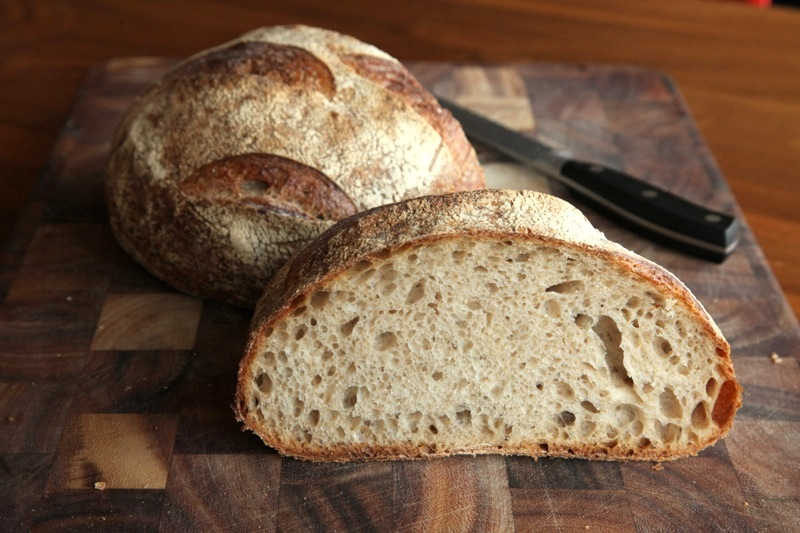

Velkommen til Brødklubben
 Gjennom vår familietradisjon har forfedrene våre bakt brød siden 1800 tallet, og tjeneste gjort for Christian Fredrik (1814) frem til i dag.
Oppskriften er basert på eld gammel bake kunstverk, og gjennom årene har vi finjustert den av ulike mel sort og teknikker for å fremheve brødsmaken til å levere ett utsøkt kvalitet til våre kunder.
Trykk gjerne her for å kontakte oss, eller ring på 22334455
Du kan også sende oss email, post@brodklubben.no